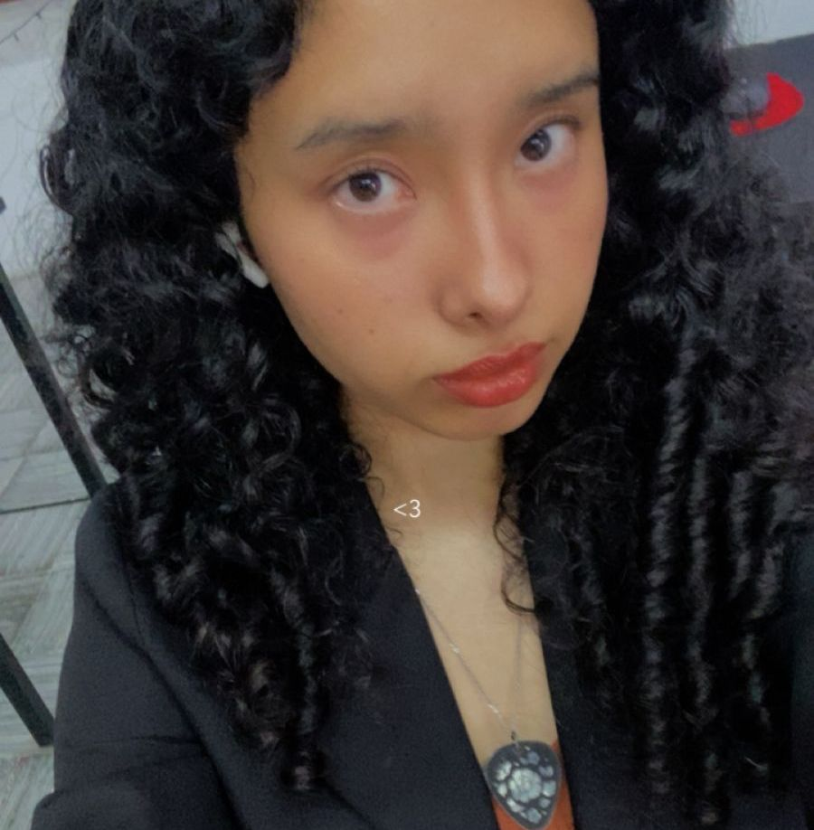
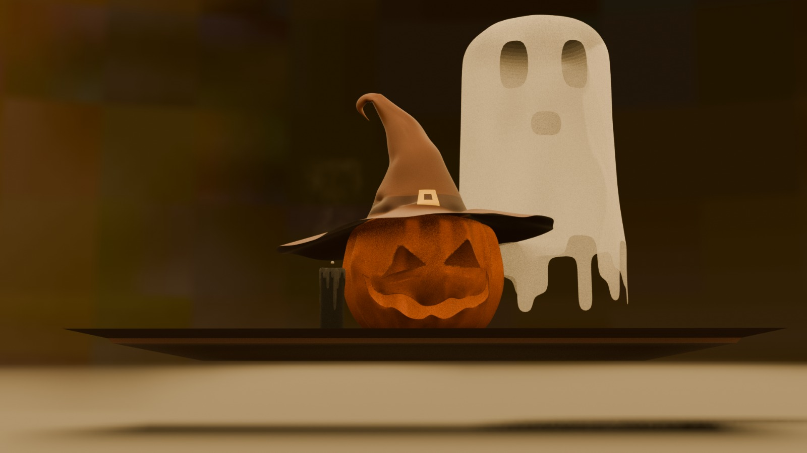

Jocelyn Mariela Porras Carrera - 19 años
Estudiante de Ingeniería en Multimedia – 4to semestre
Instituto Palmore, Chihuahua, México
Soy estudiante de Ingeniería en Multimedia con interés en la creación de proyectos que
combinan narrativa, diseño y tecnología. Me apasiona el desarrollo de contenido visual y digital,
especialmente en áreas como la narrativa multimedia, el diseño interactivo y la producción audiovisual.
Me considero una persona creativa, comprometida y en constante aprendizaje, con interés en desarrollar
proyectos que conecten emocionalmente con el público y aporten valor cultural y creativo.
Fuera de clases me gusta explorar otras facetas en mi creatividad como la escritura, creando historias
nuevas, las cuales busco que en un futuro vean la luz al mundo.

